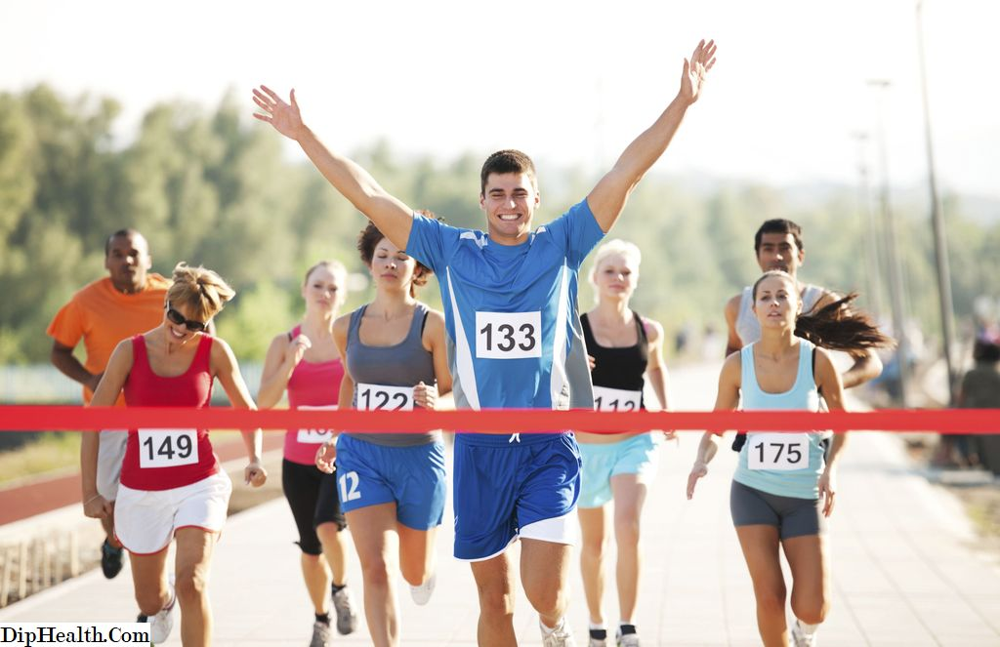
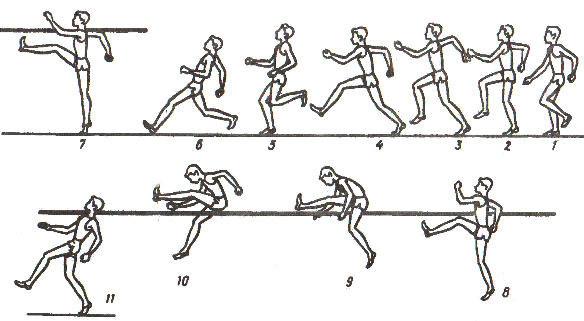

1. В каком году появилась отечественная легкая атлетика?
2. В каком году команда легкоатлетов России приняла участие в Олимпийских играх в Стокгольме?

3. Легкая атлетика - это вид спорта, которая объединяет:
4. Что из перечисленного НЕ входит в легкую атлетику?
5. Как называется бег на короткую дистанцию?

6. Какие дистанции в легкой атлетике являются длинными?
7. Сколько и какие команды даются для бега с низкого старта?
8. В эстафетном беге на каждом этапе размещаются зоны длинной 20 м для передачи эстафетной палочки. Ели передача эстафеты происходит вне зоны…
9. Сколько попыток представляется участнику в соревнованиях по прыжкам?
10. Прыжки в высоту не засчитываются, если участник отталкивается от земли двумя ногами. Это верно?
11. При беге на длинные дистанции следует дышать…
12. Нога , которая первая преодолевает планку в прыжке называется...

13. Как называются фазы прыжка в высоту (в верной последовательности)?
14. Как называются фазы метания (последовательно)?
15. Чем спортивная ходьба отличается от обычной?